Tutorial Instalação do Flutter no Ubuntu
O Flutter é um framework que permite de forma ágil o desenvolvimento de aplicações
multiplataforma,
tendo como alvos principais, porém não unicamente, os sistemas Android e IOS.
Utiliza a linguagem Dart e proporciona que um único código escrito gere aplicações capazes de
rodar em
mais de uma plataforma evitando assim desperdício de tempo na escrita de instruções idênticas
para mais
de um SO.
Neste tutorial utilizaremos o linux pois a maioria expressiva dos tutoriais disponíveis na
internet sobre
esse tema
contempla a instalação no Windows, porém existem muitos programadores que, assim como eu,
utilizam linux
durante o desenvolvimento de seus projetos.
Estarei utilizando o Linux Mint, porém este tutorial se aplica a varias outras distribuições
também
derivadas do Ubuntu, assim como para o próprio.
A instalação do Flutter é fácil no Linux, primeiro iremos até o site do projeto disponível em flutter.dev
e faremos o download da versão para Linux.
Basicamente a instalação se resume a baixar e descompactar o pacote, de preferência em uma pasta
de fácil acesso. Após a descompactação uma pasta flutter será criada contendo o framework.
2 - Instalando o Android Studio
O Android Studio é a IDE oficial de desenvolvimento para Android, ela traz um conjunto de
ferramentas para que você crie, compile e teste seus projetos de maneira simples.
Para baixar o Android Studio navegamos até sua página oficial disponível em developer.android.com/studio e faremos o
download da versão para Linux.
O Android Studio para Linux, assim como o Flutter, vem em um arquivo compactado, basta
descompactá-lo em um local de sua preferência.
Enquanto o pacote é baixado, caso você utilize um sistema de 64 bits, é preciso instalar algumas
bibliotecas necessárias para que o Android Studio funcione corretamente.
Para isso basta abrir o terminal e executar o seguinte comando:
sudo apt-get install libc6:i386 libncurses5:i386 libstdc++6:i386 lib32z1 libbz2-1.0:i386
3 - Configurando o Emulador Android
Uma das principais ferramentas do Android Studio é o emulador, com ele podemos simular um
sistema Android rodando em nosso computador e assim fazer
testes em tempo real da aplicação que estamos desenvolvendo.
Para configurar o emulador primeiro vamos até a pasta onde foi descompactado o Android Studio,
navegamos até a subpasta bin e executamos o arquivo studio.sh e, após algumas configurações
iniciais ao estilo "next, next...finish",
teremos a plataforma aberta em nosso computador pronta para uso.
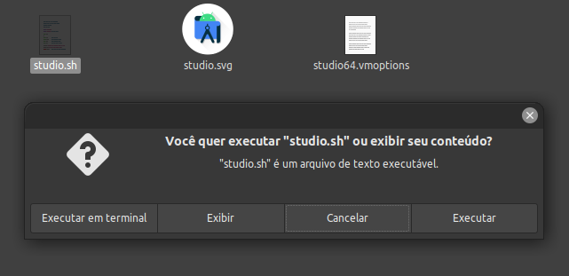
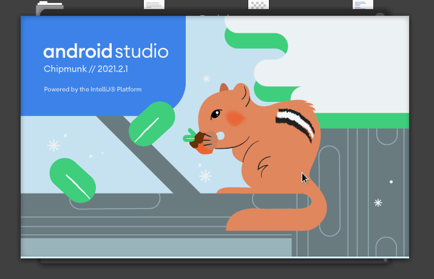
Na tela inicial podemos expandir More Actions e selecionar
Virtual Device Manager para irmos direto a página de gerenciamento dos emuladores.
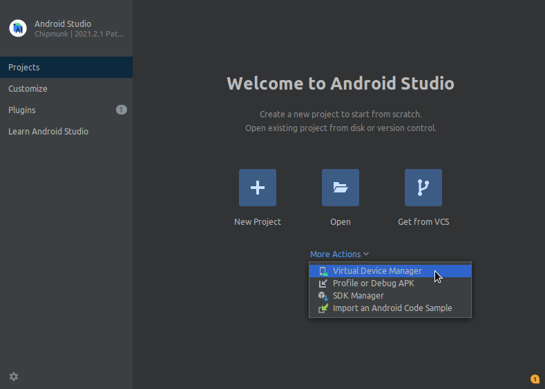
Clicando em Create Device temos acesso a tela Select Hardware onte temos uma série
de configurações que darão origem a um dispositivo virtual, bastando criar um dispositivo com as
características que mais lhe agrada e clicar em Next.
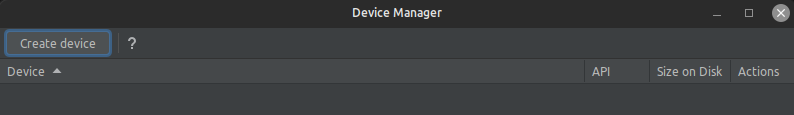
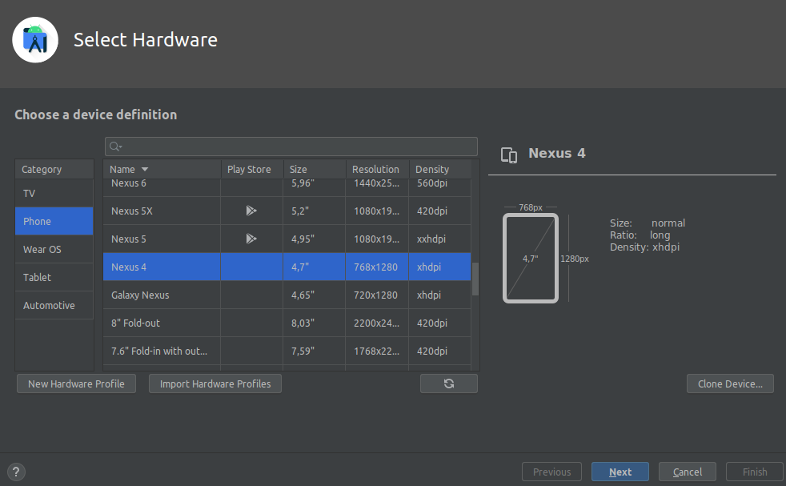
Na próxima etapa precisamos escolher a versão do sistema Android que nosso dispositivo virtual
irá executar, aqui basta escolher a versão desejada, fazer o download e clicar em
Next.
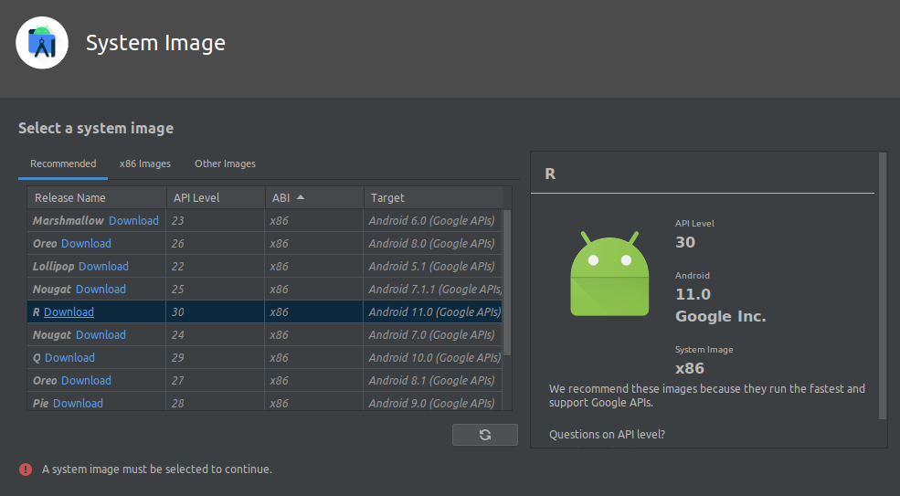
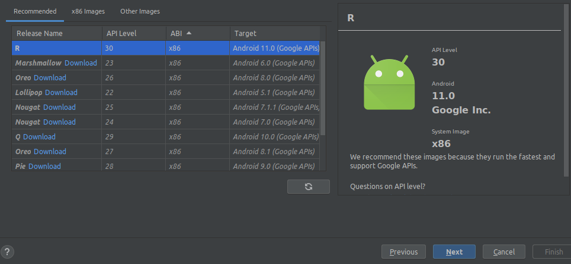
Na última etapa basta revisar as configurações e clicar em Finish para concluir a
criação do dispositivo virtual, ou AVD.
Agora que nosso aparelho aparece na lista basta dar um play e ele logo iniciará!
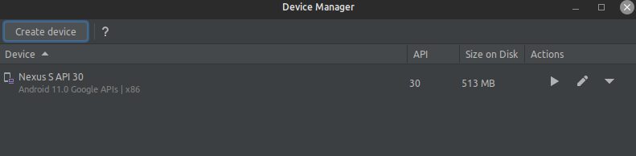
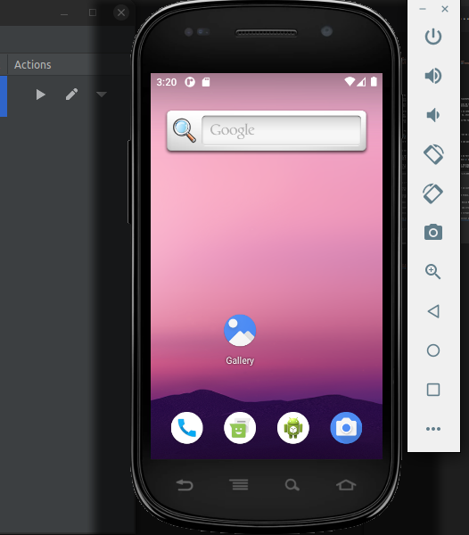
Vocẽ pode criar e testar vários dispositivos com várias versões do Android diferentes.
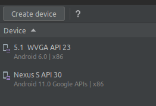
4 - Configurando o Visual Studio Code
Como mencionado anteriormente, o Android Studio é uma IDE completa para a criação e testes de
aplicações, sendo que à partir dela você já consegue desenvolver seus aplicativos, contudo o
Visual Studio Code é um editor mais leve e prático, sendo assim preferido por muitos
programadores.
Por isso mostrarei como instalar e configurar o Visual Studio Code, comumente conhecido como VS
Code e configurá-lo para o desenvolvimento com Flutter e integração com o AVD do Android Studio.
Primeiro realizaremos o Download do pacote .deb para Linux na página oficial acessível em code.visualstudio.com. Após
concluir o download basta clicar sobre o programa com o botão direito e abrir com o Instalador
de Pacotes,
ou então abrir o terminal, navegar até a pasta e executar o comando de instalação
sudo dpkg -i [nome_do_pacote].deb onde [nome_do_pacote] deverá ser substituído pelo
nome do arquivo baixado.
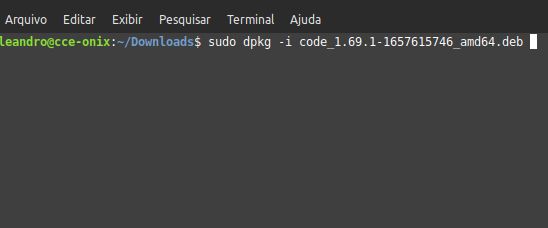
Após instalado, basta pesquisar por ele no menu principal do sistema.
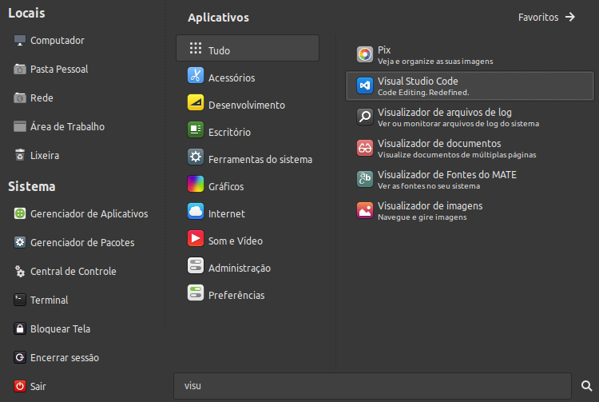
Após abrir o VS Code, para trabalhar com Flutter precisamos instalar a extensão do mesmo,
pressionando Ctrl+Shift+X ou navegando até File/Preferences/Extensions.
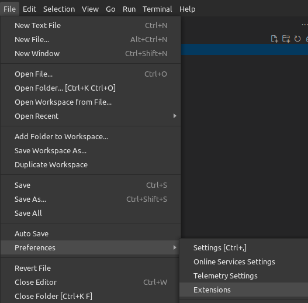
No campo de pesquisa basta digitar Flutter e clicar em Install.
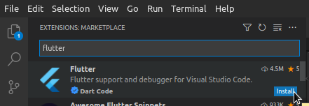
Agora que temos tudo pronto, criaremos nosso primeiro projeto, para isso basta navegar até
View/CommandPalette ou então usar o atalho Ctrl+Shift+P para abrir a janela de comandos,
nela pesquisar por Flutter e selecionar Flutter: New Project.
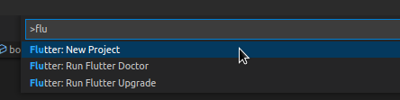
Como é a primeira vez que estamos executando este comando, o VS Code irá perguntar sobre o SDK
do Flutter na janela abaixo:
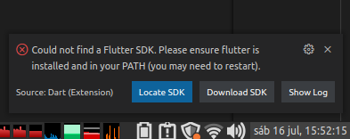
Basta clicar em Locate SDK e selecionar a pasta onde você descompactou o arquivo
baixado no começo do tutorial:
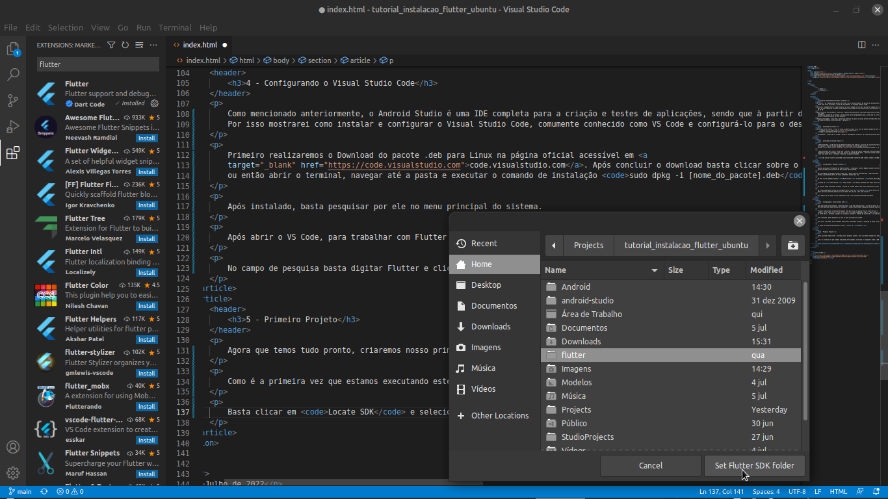
Ao executar o Flutter: New Project o VS Code exibirá uma lista de tipos de projetos
que você pode criar, selecione Application para criar uma aplicação
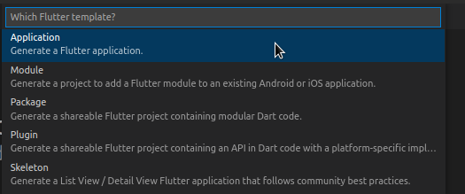
Em seguida selecione ou crie a pasta onde será salvo seu projeto. Dê um nome para seu projeto e
aguarde a criação do mesmo.
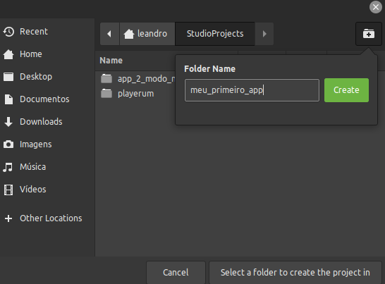
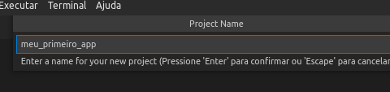
Temos agora uma visão geral do projeto criado!
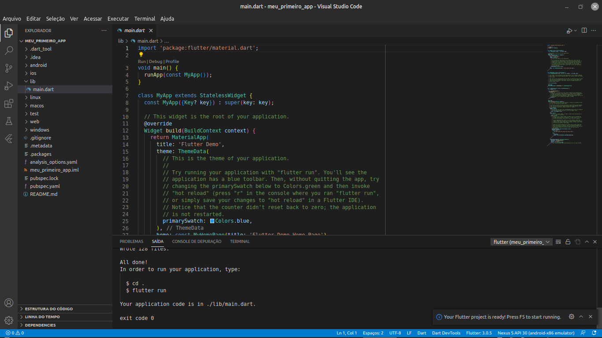
Ao pressionar F5 a IDE fará a execução do projeto padrão criado pelo Flutter.
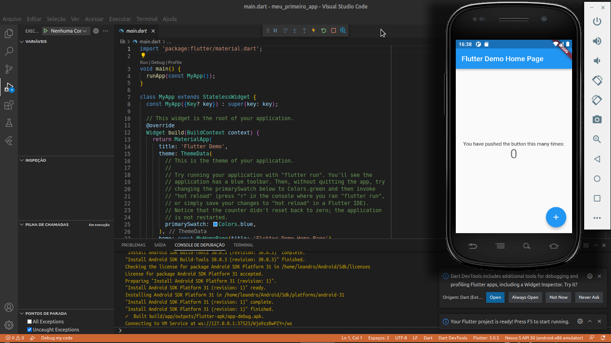